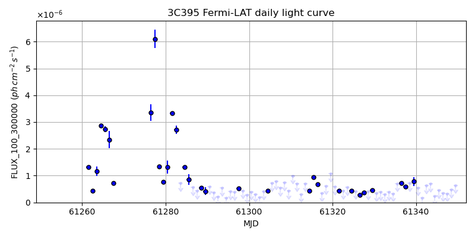
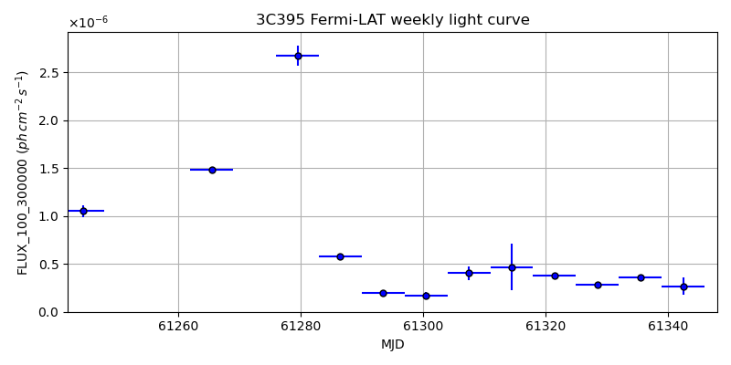
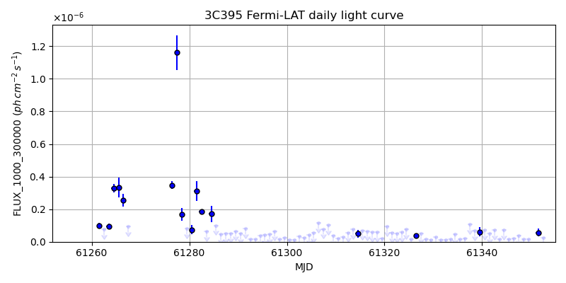
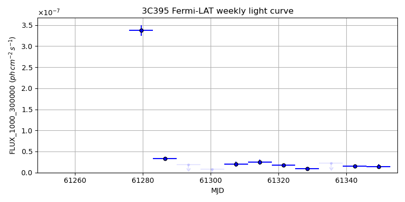

LAT Lightcurve site: https://fermi.gsfc.nasa.gov/ssc/data/access/lat/msl_lc/source/3C_395
NED: Query
Time of last update of this page: UT: 2026-11-13 16:26 (MJD: 61357.685)
| Property | Value |
|---|---|
| R.A. | 19:02:23.28 |
| Dec. | 32:00:00.0 |
| z | 0.635 |
| 3FGL SpectrumType | |
| 3FGL PL Index | -1.00 |
| 3FGL Flux_100_300000 | -1.00e+00 |
| 3FGL Flux_1000_300000 | -1.00e+00 |
| 3FGL Flux >200 GeV | -1.00e+00 |
| 3FGL Extrap. Crab >200 GeV | -1.00 |
| 3FGL Flux After EBL Absorption >200GeV | -1.00e+00 |
| 3FGL EBL Crab Fraction >200GeV | -1.00 |

| MJD | dMJD | Flux | dFlux | Frac3FGL | FracCrab>200GeV | EBLFracCrab>200GeV |
|---|---|---|---|---|---|---|
| 61348.50 | 0.50 | 4.70e-07 | 0.00e+00 | 0.00 | 0.00 | -0.00 |
| 61349.50 | 0.50 | 6.40e-07 | 0.00e+00 | 0.00 | 0.00 | -0.00 |
| 61350.50 | 0.50 | 5.72e-07 | 0.00e+00 | 0.00 | 0.00 | -0.00 |
| 61351.50 | 0.50 | 4.97e-07 | 0.00e+00 | 0.00 | 0.00 | -0.00 |
| 61352.50 | 0.50 | 6.59e-07 | 0.00e+00 | 0.00 | 0.00 | -0.00 |

| MJD | dMJD | Flux | dFlux | Frac3FGL | FracCrab>200GeV | EBLFracCrab>200GeV |
|---|---|---|---|---|---|---|
| 61321.50 | 3.50 | 3.75e-07 | 0.00e+00 | 0.00 | 0.00 | -0.00 |
| 61328.50 | 3.50 | 2.84e-07 | 0.00e+00 | 0.00 | 0.00 | -0.00 |
| 61335.50 | 3.50 | 3.56e-07 | 0.00e+00 | 0.00 | 0.00 | -0.00 |
| 61342.50 | 3.50 | 2.68e-07 | 0.00e+00 | 0.00 | 0.00 | -0.00 |
| 61349.50 | 3.50 | 2.74e-07 | 0.00e+00 | 0.00 | 0.00 | -0.00 |

| MJD | dMJD | Flux | dFlux | Frac3FGL | FracCrab>200GeV | EBLFracCrab>200GeV |
|---|---|---|---|---|---|---|
| 61348.50 | 0.50 | 1.60e-08 | 0.00e+00 | 0.00 | 0.00 | -0.00 |
| 61349.50 | 0.50 | 1.65e-08 | 0.00e+00 | 0.00 | 0.00 | -0.00 |
| 61350.50 | 0.50 | -1.00e+00 | 0.00e+00 | 0.00 | 0.00 | -0.00 |
| 61351.50 | 0.50 | 5.64e-08 | 0.00e+00 | 0.00 | 0.00 | -0.00 |
| 61352.50 | 0.50 | 2.58e-08 | 0.00e+00 | 0.00 | 0.00 | -0.00 |

| MJD | dMJD | Flux | dFlux | Frac3FGL | FracCrab>200GeV | EBLFracCrab>200GeV |
|---|---|---|---|---|---|---|
| 61321.50 | 3.50 | 1.77e-08 | 0.00e+00 | 0.00 | 0.00 | -0.00 |
| 61328.50 | 3.50 | 9.57e-09 | 0.00e+00 | 0.00 | 0.00 | -0.00 |
| 61335.50 | 3.50 | 2.20e-08 | 0.00e+00 | 0.00 | 0.00 | -0.00 |
| 61342.50 | 3.50 | 1.58e-08 | 0.00e+00 | 0.00 | 0.00 | -0.00 |
| 61349.50 | 3.50 | 1.43e-08 | 0.00e+00 | 0.00 | 0.00 | -0.00 |
--------------------------------------------------------- Using user-supplied coords: 19:02:23.28 32:00:00.0 2000 --------------------------------------------------------- FLWO UT night of: 2026-11-14 Local Sid. @ Midnight: 03:09 Sunset (-15.0) (local, UT): 18:35 01:35 Sunrise (-15.0) (local, UT): 05:42 12:42 Moonrise (local, UT): Moonset (local, UT): 20:50 03:50 Moon phase: 0.22 --------------------------------------------------------- AzTime LSID UT Obj_el Obj_az Mn_el Mn_az Sep. --------------------------------------------------------- 18:35 21:44 01:35 56.1 281.5 20.1 218.2 58.7 19:05 22:14 02:05 49.9 283.6 16.0 223.7 58.6 19:35 22:44 02:35 43.7 285.8 11.6 228.6 58.5 20:05 23:14 03:05 37.6 288.2 6.9 233.2 58.4 20:35 23:44 03:35 31.5 290.7 2.0 237.3 58.3 21:05 00:14 04:05 25.6 293.3 -2.2 241.2 58.3 21:35 00:44 04:35 19.8 296.2 -9.0 244.8 58.2 22:05 01:14 05:05 14.1 299.2 -14.6 248.2 58.1 22:35 01:44 05:35 8.7 302.5 -20.4 251.4 58.0 23:05 02:14 06:05 3.5 306.1 -26.2 254.5 57.9 23:35 02:44 06:35 -0.9 310.0 -32.1 257.5 57.9 00:05 03:14 07:05 -6.4 314.2 -38.1 260.6 57.8 00:35 03:45 07:35 -10.9 318.9 -44.2 263.8 57.7 01:05 04:15 08:05 -14.9 324.0 -50.2 267.1 57.6 01:35 04:45 08:35 -18.4 329.6 -56.3 270.9 57.6 02:05 05:15 09:05 -21.3 335.6 -62.4 275.3 57.5 02:35 05:45 09:35 -23.7 342.0 -68.4 281.1 57.5 03:05 06:15 10:05 -25.3 348.8 -74.2 289.9 57.4 03:35 06:45 10:35 -26.1 355.8 -79.6 306.2 57.4 04:05 07:15 11:05 -26.2 2.9 -83.2 343.5 57.4 04:35 07:45 11:35 -25.5 9.9 -82.1 35.1 57.4 05:05 08:15 12:05 -24.0 16.8 -77.4 61.2 57.4 05:35 08:45 12:35 -21.8 23.3 -71.8 73.4 57.4 05:42 08:52 12:42 -21.3 24.6 -70.5 75.2 57.3 --------------------------------------------------------- Dark hours >55 deg.: 0.00